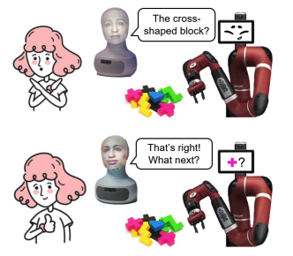
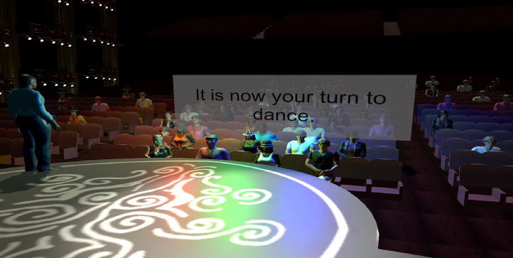

|
Bradon Thymes I am a third-year CS PhD student at Cornell University, advised by Prof. Bharath Hariharan. |
{kind=link}
Selected Publications |

|
Ranking with Slot Constraints
Wentao Guo, Andrew Wang, Bradon Thymes, Thorsten Joachims KDD, 2024arXiv Developed methodologies to optimize ranking systems under slot constraints, ensuring fairness and efficiency in resource allocation. |
|
|
Augmenting Holistic Review in University Admission using Natural Language Processing for Essays and Recommendation Letters
Jinsook Lee, Bradon Thymes, Joyce Zhou, Thorsten Joachims, Rene F Kizilcec AIED, 2023 arXiv Leveraged NLP techniques to analyze student essays and recommendation letters for university admissions. |
|

|
Team3 challenge: Tasks for multi-human and multi-robot collaboration with voice and gestures
Michael J. Munje, Lylybell K. Teran, Bradon Thymes, Joseph P Salisbury HRI, 2023 project page / arXiv Developed systems for multi-human and multi-robot collaboration in task execution using voice and gestures. |
|

|
Evoking Stress Reactivity in a Virtual Dance Competition
Lotte van Dammen, Neil Barnett, Roselynn Conrady, Lucas Wright, Bradon Thymes, Elizabeth A Shirtcliff AHFE, 2020 project page / arXiv Explored stress response in virtual reality using physiological and behavioral data. |
|
|
Comparing Human and Machine Bias in Face Recognition
Samuel Dooley, Ryan Downing, George Wei, Nathan Shankar, Bradon Thymes, Gudrun Thorkelsdottir, Tiye Kurtz-Miott, Rachel Mattson, Olufemi Obiwumi, Valeriia Cherepanova, Micah Goldblum, John P Dickerson, Tom Goldstein arXiv, 2023 project page / arXiv Investigated biases in facial recognition models compared to human biases. |
Teaching |
|
|
Graduate Teaching Assistant
Bowers CIS College of Computing and Information Science AHFE, 2020 project page / arXiv CS1110 Introduction to Computing: A Design and Development Perspective (FA24) |
Service |